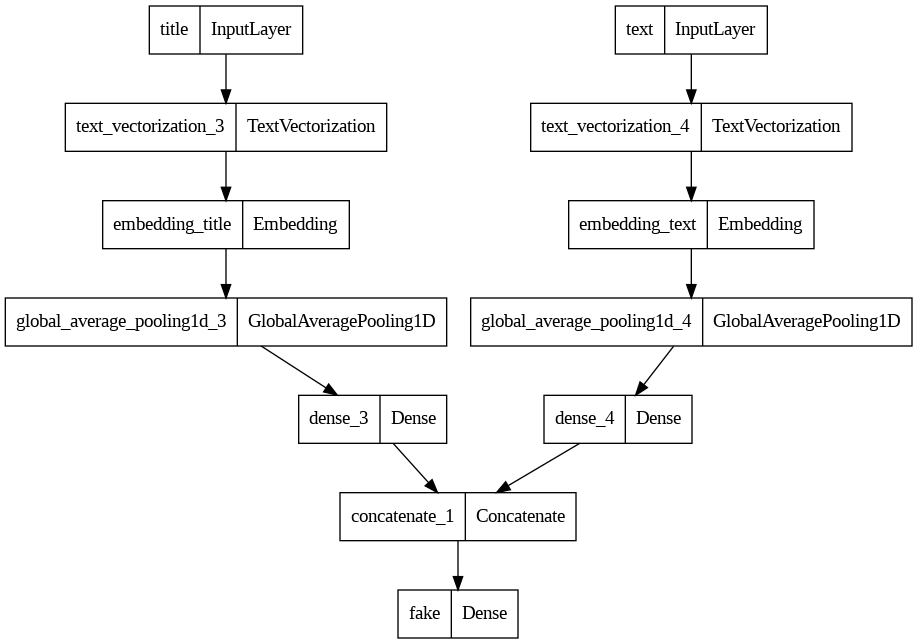

import numpy as np
import pandas as pd
import tensorflow as tf
import re
import string
from tensorflow import keras
from tensorflow.keras import layers
from tensorflow.keras import losses
from tensorflow.keras import utils
from tensorflow.keras.layers import TextVectorization
from tensorflow.keras.layers import StringLookup
from sklearn.model_selection import train_test_split
from sklearn.preprocessing import LabelEncoder
import nltk
from nltk.corpus import stopwords
# for embedding viz
import plotly.express as px
import plotly.io as pio
pio.templates.default = "plotly_white"
pio.renderers.default="iframe"
import matplotlib.pyplot as pltFake News Classification
In this blog post we will be developing and using a fake news classifier using Tensorflow.
We will first import all the packages we’ll need.
train_url = "https://github.com/PhilChodrow/PIC16b/blob/master/datasets/fake_news_train.csv?raw=true"
df = pd.read_csv(train_url)Let’s see what our dataset looks like:
df.head()| Unnamed: 0 | title | text | fake | |
|---|---|---|---|---|
| 0 | 17366 | Merkel: Strong result for Austria's FPO 'big c... | German Chancellor Angela Merkel said on Monday... | 0 |
| 1 | 5634 | Trump says Pence will lead voter fraud panel | WEST PALM BEACH, Fla.President Donald Trump sa... | 0 |
| 2 | 17487 | JUST IN: SUSPECTED LEAKER and “Close Confidant... | On December 5, 2017, Circa s Sara Carter warne... | 1 |
| 3 | 12217 | Thyssenkrupp has offered help to Argentina ove... | Germany s Thyssenkrupp, has offered assistance... | 0 |
| 4 | 5535 | Trump say appeals court decision on travel ban... | President Donald Trump on Thursday called the ... | 0 |
Looks interesting! We have the title of the article, the text inside of it, and the label of whether or not it’s fake. Now let’s create a function that will remove stopwords from the title and text columns, and return a tensorflow dataset from the pandas dataframe. We’ll first download the stopwords that we need.
nltk.download("stopwords")[nltk_data] Downloading package stopwords to /root/nltk_data...
[nltk_data] Package stopwords is already up-to-date!Truestop = stopwords.words("english")print(stop[:10]) # visualizing some of the stop words['i', 'me', 'my', 'myself', 'we', 'our', 'ours', 'ourselves', 'you', "you're"]def make_dataset(df):
stop = stopwords.words("english")
# we need to make sure we lowercase the words before checking if its in the stopwords list
df["title"] = df["title"].apply(lambda x: " ".join([word for word in x.split() if word.lower() not in (stop)]))
df["text"] = df["text"].apply(lambda x: " ".join([word for word in x.split() if word.lower() not in (stop)]))
features = { "title": df[["title"]], "text": df[["text"]] }
target = { "fake": df[["fake"]] }
dataset = tf.data.Dataset.from_tensor_slices((features, target))
return dataset.batch(100)dataset = make_dataset(df)Great! We’ve made the dataset. Now let’s do an 80-20 split for validation.
train_size = int(0.8*len(dataset))
val_size = int(0.2*len(dataset))
train_data = dataset.take(train_size)
val_data = dataset.skip(train_size)train_data.shuffle(buffer_size = train_size, reshuffle_each_iteration=False)<_ShuffleDataset element_spec=({'title': TensorSpec(shape=(None, 1), dtype=tf.string, name=None), 'text': TensorSpec(shape=(None, 1), dtype=tf.string, name=None)}, {'fake': TensorSpec(shape=(None, 1), dtype=tf.int64, name=None)})>len(train_data), len(val_data) # sanity check(180, 45)Let’s think about the base case for a bit. In this case, our base case could just be us being trigger happy and labeling all news as fake news. Lets take a quick look at the distribution of our labels and see how accurate this kind of classifier would be.
labels = []
for i in train_data:
labels.extend(i[1]["fake"].numpy().reshape(1,-1)[0])len(labels)18000fake_count = labels.count(1)print(f"Proportion of fake labels: {fake_count/len(labels)}")Proportion of fake labels: 0.5220555555555556This means that our base classifier would have around a 52.2% accuracy. Let’s see if we can do any better. Let’s start with doing some text vectorization. The code below will make all the strings lowercase and remove all punctuation. We’ll also limit the vocabulary to avoid overcomplicating things and also to ignore words that almost never show up.
#preparing a text vectorization layer for tf model
size_vocabulary = 2000
def standardization(input_data):
lowercase = tf.strings.lower(input_data)
no_punctuation = tf.strings.regex_replace(lowercase,
'[%s]' % re.escape(string.punctuation),'')
return no_punctuation
title_vectorize_layer = TextVectorization(
standardize=standardization,
max_tokens=size_vocabulary, # only consider this many words
output_mode='int',
output_sequence_length=500)
text_vectorize_layer = TextVectorization(
standardize=standardization,
max_tokens=size_vocabulary, # only consider this many words
output_mode='int',
output_sequence_length=500)
title_vectorize_layer.adapt(train_data.map(lambda x, y: x["title"]))
text_vectorize_layer.adapt(train_data.map(lambda x, y: x["text"]))embedding_title = layers.Embedding(size_vocabulary, 2, name="embedding_title")
embedding_text = layers.Embedding(size_vocabulary, 2, name="embedding_text")Now, let’s answer this interesting question: When detecting fake news, is it most effective to focus only on the title of the article, the full text, or both? Let’s start by training only on the title.
title_inputs = keras.Input(shape=(1,), name="title", dtype="string")
title_hidden = title_vectorize_layer(title_inputs)
title_hidden = embedding_title(title_hidden)
title_hidden = layers.GlobalAveragePooling1D()(title_hidden)
title_hidden = layers.Dense(80, activation="relu")(title_hidden)
title_outputs = layers.Dense(2, name="fake")(title_hidden)
title_model = keras.Model(
inputs = title_inputs,
outputs = title_outputs
)title_model.compile(
optimizer = "adam",
loss = losses.SparseCategoricalCrossentropy(from_logits=True),
metrics = ["accuracy"]
)title_model.summary()Model: "model_4"
_________________________________________________________________
Layer (type) Output Shape Param #
=================================================================
title (InputLayer) [(None, 1)] 0
text_vectorization_3 (Text (None, 500) 0
Vectorization)
embedding_title (Embedding (None, 500, 2) 4000
)
global_average_pooling1d_3 (None, 2) 0
(GlobalAveragePooling1D)
dense_3 (Dense) (None, 80) 240
fake (Dense) (None, 2) 162
=================================================================
Total params: 4402 (17.20 KB)
Trainable params: 4402 (17.20 KB)
Non-trainable params: 0 (0.00 Byte)
_________________________________________________________________history_title = title_model.fit(train_data, validation_data=val_data, epochs=30, verbose=True)Epoch 1/30
180/180 [==============================] - 7s 36ms/step - loss: 0.6925 - accuracy: 0.5178 - val_loss: 0.6917 - val_accuracy: 0.5266
Epoch 2/30
180/180 [==============================] - 1s 5ms/step - loss: 0.6920 - accuracy: 0.5221 - val_loss: 0.6909 - val_accuracy: 0.5266
Epoch 3/30
180/180 [==============================] - 1s 5ms/step - loss: 0.6870 - accuracy: 0.5392 - val_loss: 0.6759 - val_accuracy: 0.5278
Epoch 4/30
180/180 [==============================] - 1s 8ms/step - loss: 0.6417 - accuracy: 0.7271 - val_loss: 0.5900 - val_accuracy: 0.8517
Epoch 5/30
180/180 [==============================] - 1s 6ms/step - loss: 0.5195 - accuracy: 0.8608 - val_loss: 0.4527 - val_accuracy: 0.8721
Epoch 6/30
180/180 [==============================] - 1s 6ms/step - loss: 0.3935 - accuracy: 0.8834 - val_loss: 0.3547 - val_accuracy: 0.8809
Epoch 7/30
180/180 [==============================] - 1s 6ms/step - loss: 0.3152 - accuracy: 0.8975 - val_loss: 0.2976 - val_accuracy: 0.8896
Epoch 8/30
180/180 [==============================] - 1s 5ms/step - loss: 0.2668 - accuracy: 0.9084 - val_loss: 0.2591 - val_accuracy: 0.8986
Epoch 9/30
180/180 [==============================] - 1s 6ms/step - loss: 0.2333 - accuracy: 0.9171 - val_loss: 0.2324 - val_accuracy: 0.9078
Epoch 10/30
180/180 [==============================] - 1s 6ms/step - loss: 0.2095 - accuracy: 0.9239 - val_loss: 0.2132 - val_accuracy: 0.9135
Epoch 11/30
180/180 [==============================] - 1s 6ms/step - loss: 0.1919 - accuracy: 0.9283 - val_loss: 0.1990 - val_accuracy: 0.9164
Epoch 12/30
180/180 [==============================] - 1s 6ms/step - loss: 0.1783 - accuracy: 0.9329 - val_loss: 0.1882 - val_accuracy: 0.9211
Epoch 13/30
180/180 [==============================] - 1s 6ms/step - loss: 0.1675 - accuracy: 0.9362 - val_loss: 0.1798 - val_accuracy: 0.9252
Epoch 14/30
180/180 [==============================] - 1s 7ms/step - loss: 0.1587 - accuracy: 0.9393 - val_loss: 0.1730 - val_accuracy: 0.9285
Epoch 15/30
180/180 [==============================] - 1s 7ms/step - loss: 0.1514 - accuracy: 0.9417 - val_loss: 0.1675 - val_accuracy: 0.9308
Epoch 16/30
180/180 [==============================] - 1s 5ms/step - loss: 0.1451 - accuracy: 0.9436 - val_loss: 0.1631 - val_accuracy: 0.9321
Epoch 17/30
180/180 [==============================] - 1s 6ms/step - loss: 0.1397 - accuracy: 0.9456 - val_loss: 0.1594 - val_accuracy: 0.9339
Epoch 18/30
180/180 [==============================] - 1s 5ms/step - loss: 0.1350 - accuracy: 0.9476 - val_loss: 0.1564 - val_accuracy: 0.9362
Epoch 19/30
180/180 [==============================] - 1s 6ms/step - loss: 0.1308 - accuracy: 0.9488 - val_loss: 0.1539 - val_accuracy: 0.9380
Epoch 20/30
180/180 [==============================] - 1s 5ms/step - loss: 0.1271 - accuracy: 0.9506 - val_loss: 0.1519 - val_accuracy: 0.9384
Epoch 21/30
180/180 [==============================] - 1s 7ms/step - loss: 0.1238 - accuracy: 0.9518 - val_loss: 0.1502 - val_accuracy: 0.9389
Epoch 22/30
180/180 [==============================] - 1s 6ms/step - loss: 0.1208 - accuracy: 0.9531 - val_loss: 0.1489 - val_accuracy: 0.9398
Epoch 23/30
180/180 [==============================] - 1s 6ms/step - loss: 0.1180 - accuracy: 0.9543 - val_loss: 0.1479 - val_accuracy: 0.9395
Epoch 24/30
180/180 [==============================] - 1s 8ms/step - loss: 0.1155 - accuracy: 0.9554 - val_loss: 0.1471 - val_accuracy: 0.9398
Epoch 25/30
180/180 [==============================] - 1s 8ms/step - loss: 0.1132 - accuracy: 0.9566 - val_loss: 0.1465 - val_accuracy: 0.9395
Epoch 26/30
180/180 [==============================] - 1s 5ms/step - loss: 0.1111 - accuracy: 0.9574 - val_loss: 0.1462 - val_accuracy: 0.9391
Epoch 27/30
180/180 [==============================] - 2s 11ms/step - loss: 0.1091 - accuracy: 0.9584 - val_loss: 0.1460 - val_accuracy: 0.9391
Epoch 28/30
180/180 [==============================] - 1s 8ms/step - loss: 0.1073 - accuracy: 0.9594 - val_loss: 0.1459 - val_accuracy: 0.9391
Epoch 29/30
180/180 [==============================] - 2s 10ms/step - loss: 0.1055 - accuracy: 0.9601 - val_loss: 0.1460 - val_accuracy: 0.9382
Epoch 30/30
180/180 [==============================] - 2s 12ms/step - loss: 0.1039 - accuracy: 0.9607 - val_loss: 0.1462 - val_accuracy: 0.9384/usr/local/lib/python3.10/dist-packages/keras/src/engine/functional.py:642: UserWarning:
Input dict contained keys ['text'] which did not match any model input. They will be ignored by the model.
plt.plot(history_title.history["accuracy"], label = "training accuracy")
plt.plot(history_title.history["val_accuracy"], label = "validation accuracy")
plt.legend()
plt.show()We have pretty good performance here! There’s a bit of overfitting in the later epochs, but overall this is way better than our base case model.
text_inputs = keras.Input(shape=(1,), name="text", dtype="string")
text_hidden = text_vectorize_layer(text_inputs)
text_hidden = embedding_text(text_hidden)
text_hidden = layers.GlobalAveragePooling1D()(text_hidden)
text_hidden = layers.Dense(80, activation="relu")(text_hidden)
text_outputs = layers.Dense(2, name="fake")(text_hidden)
text_model = keras.Model(
inputs = text_inputs,
outputs = text_outputs
)text_model.compile(
optimizer = "adam",
loss = losses.SparseCategoricalCrossentropy(from_logits=True),
metrics = ["accuracy"]
)text_model.summary()Model: "model_5"
_________________________________________________________________
Layer (type) Output Shape Param #
=================================================================
text (InputLayer) [(None, 1)] 0
text_vectorization_4 (Text (None, 500) 0
Vectorization)
embedding_text (Embedding) (None, 500, 2) 4000
global_average_pooling1d_4 (None, 2) 0
(GlobalAveragePooling1D)
dense_4 (Dense) (None, 80) 240
fake (Dense) (None, 2) 162
=================================================================
Total params: 4402 (17.20 KB)
Trainable params: 4402 (17.20 KB)
Non-trainable params: 0 (0.00 Byte)
_________________________________________________________________history_text = text_model.fit(train_data, validation_data=val_data, epochs=30, verbose=True)Epoch 1/30
180/180 [==============================] - 10s 53ms/step - loss: 0.6719 - accuracy: 0.6003 - val_loss: 0.6014 - val_accuracy: 0.8505
Epoch 2/30
180/180 [==============================] - 2s 11ms/step - loss: 0.4348 - accuracy: 0.9137 - val_loss: 0.2991 - val_accuracy: 0.9418
Epoch 3/30
180/180 [==============================] - 2s 13ms/step - loss: 0.2396 - accuracy: 0.9447 - val_loss: 0.1987 - val_accuracy: 0.9566
Epoch 4/30
180/180 [==============================] - 3s 16ms/step - loss: 0.1736 - accuracy: 0.9601 - val_loss: 0.1561 - val_accuracy: 0.9652
Epoch 5/30
180/180 [==============================] - 2s 13ms/step - loss: 0.1400 - accuracy: 0.9682 - val_loss: 0.1318 - val_accuracy: 0.9688
Epoch 6/30
180/180 [==============================] - 2s 11ms/step - loss: 0.1186 - accuracy: 0.9732 - val_loss: 0.1162 - val_accuracy: 0.9701
Epoch 7/30
180/180 [==============================] - 2s 11ms/step - loss: 0.1034 - accuracy: 0.9754 - val_loss: 0.1056 - val_accuracy: 0.9721
Epoch 8/30
180/180 [==============================] - 2s 11ms/step - loss: 0.0918 - accuracy: 0.9782 - val_loss: 0.0980 - val_accuracy: 0.9737
Epoch 9/30
180/180 [==============================] - 4s 25ms/step - loss: 0.0824 - accuracy: 0.9802 - val_loss: 0.0924 - val_accuracy: 0.9757
Epoch 10/30
180/180 [==============================] - 2s 11ms/step - loss: 0.0746 - accuracy: 0.9820 - val_loss: 0.0882 - val_accuracy: 0.9766
Epoch 11/30
180/180 [==============================] - 2s 11ms/step - loss: 0.0678 - accuracy: 0.9838 - val_loss: 0.0849 - val_accuracy: 0.9780
Epoch 12/30
180/180 [==============================] - 2s 11ms/step - loss: 0.0619 - accuracy: 0.9856 - val_loss: 0.0823 - val_accuracy: 0.9784
Epoch 13/30
180/180 [==============================] - 2s 11ms/step - loss: 0.0566 - accuracy: 0.9870 - val_loss: 0.0802 - val_accuracy: 0.9793
Epoch 14/30
180/180 [==============================] - 3s 15ms/step - loss: 0.0519 - accuracy: 0.9881 - val_loss: 0.0785 - val_accuracy: 0.9798
Epoch 15/30
180/180 [==============================] - 3s 15ms/step - loss: 0.0476 - accuracy: 0.9892 - val_loss: 0.0770 - val_accuracy: 0.9800
Epoch 16/30
180/180 [==============================] - 2s 11ms/step - loss: 0.0437 - accuracy: 0.9899 - val_loss: 0.0757 - val_accuracy: 0.9804
Epoch 17/30
180/180 [==============================] - 2s 11ms/step - loss: 0.0401 - accuracy: 0.9909 - val_loss: 0.0746 - val_accuracy: 0.9804
Epoch 18/30
180/180 [==============================] - 2s 11ms/step - loss: 0.0368 - accuracy: 0.9917 - val_loss: 0.0737 - val_accuracy: 0.9800
Epoch 19/30
180/180 [==============================] - 2s 11ms/step - loss: 0.0339 - accuracy: 0.9925 - val_loss: 0.0730 - val_accuracy: 0.9804
Epoch 20/30
180/180 [==============================] - 3s 15ms/step - loss: 0.0311 - accuracy: 0.9933 - val_loss: 0.0726 - val_accuracy: 0.9811
Epoch 21/30
180/180 [==============================] - 2s 11ms/step - loss: 0.0286 - accuracy: 0.9940 - val_loss: 0.0726 - val_accuracy: 0.9816
Epoch 22/30
180/180 [==============================] - 2s 11ms/step - loss: 0.0263 - accuracy: 0.9946 - val_loss: 0.0727 - val_accuracy: 0.9818
Epoch 23/30
180/180 [==============================] - 2s 11ms/step - loss: 0.0242 - accuracy: 0.9952 - val_loss: 0.0731 - val_accuracy: 0.9822
Epoch 24/30
180/180 [==============================] - 2s 11ms/step - loss: 0.0223 - accuracy: 0.9957 - val_loss: 0.0737 - val_accuracy: 0.9820
Epoch 25/30
180/180 [==============================] - 3s 15ms/step - loss: 0.0205 - accuracy: 0.9962 - val_loss: 0.0744 - val_accuracy: 0.9822
Epoch 26/30
180/180 [==============================] - 3s 16ms/step - loss: 0.0188 - accuracy: 0.9967 - val_loss: 0.0753 - val_accuracy: 0.9822
Epoch 27/30
180/180 [==============================] - 2s 11ms/step - loss: 0.0173 - accuracy: 0.9972 - val_loss: 0.0762 - val_accuracy: 0.9825
Epoch 28/30
180/180 [==============================] - 2s 11ms/step - loss: 0.0159 - accuracy: 0.9974 - val_loss: 0.0772 - val_accuracy: 0.9822
Epoch 29/30
180/180 [==============================] - 2s 11ms/step - loss: 0.0147 - accuracy: 0.9976 - val_loss: 0.0783 - val_accuracy: 0.9820
Epoch 30/30
180/180 [==============================] - 3s 16ms/step - loss: 0.0135 - accuracy: 0.9977 - val_loss: 0.0796 - val_accuracy: 0.9825/usr/local/lib/python3.10/dist-packages/keras/src/engine/functional.py:642: UserWarning:
Input dict contained keys ['title'] which did not match any model input. They will be ignored by the model.
plt.plot(history_text.history["accuracy"], label = "training accuracy")
plt.plot(history_text.history["val_accuracy"], label = "validation accuracy")
plt.legend()
plt.show()This performed even better! Our validation accuracy stabilizes above 95%, which is very impressive. Overfitting does not seem to be nearly as present here.
We got really great results with both models! Now let’s try combining the inputs.
inputs = [title_inputs, text_inputs]
outputs = layers.concatenate([title_hidden, text_hidden])
outputs = layers.Dense(2, name="fake")(outputs)
combined_model = keras.Model(
inputs = inputs,
outputs = outputs
)combined_model.compile(
optimizer = "adam",
loss = losses.SparseCategoricalCrossentropy(from_logits=True),
metrics = ["accuracy"]
)combined_model.summary()Model: "model_6"
__________________________________________________________________________________________________
Layer (type) Output Shape Param # Connected to
==================================================================================================
title (InputLayer) [(None, 1)] 0 []
text (InputLayer) [(None, 1)] 0 []
text_vectorization_3 (Text (None, 500) 0 ['title[0][0]']
Vectorization)
text_vectorization_4 (Text (None, 500) 0 ['text[0][0]']
Vectorization)
embedding_title (Embedding (None, 500, 2) 4000 ['text_vectorization_3[0][0]']
)
embedding_text (Embedding) (None, 500, 2) 4000 ['text_vectorization_4[0][0]']
global_average_pooling1d_3 (None, 2) 0 ['embedding_title[0][0]']
(GlobalAveragePooling1D)
global_average_pooling1d_4 (None, 2) 0 ['embedding_text[0][0]']
(GlobalAveragePooling1D)
dense_3 (Dense) (None, 80) 240 ['global_average_pooling1d_3[0
][0]']
dense_4 (Dense) (None, 80) 240 ['global_average_pooling1d_4[0
][0]']
concatenate_1 (Concatenate (None, 160) 0 ['dense_3[0][0]',
) 'dense_4[0][0]']
fake (Dense) (None, 2) 322 ['concatenate_1[0][0]']
==================================================================================================
Total params: 8802 (34.38 KB)
Trainable params: 8802 (34.38 KB)
Non-trainable params: 0 (0.00 Byte)
__________________________________________________________________________________________________Let’s visualize our final model and see how the separate inputs get combined.
from tensorflow.keras import utils
utils.plot_model(combined_model)
history_combined = combined_model.fit(train_data, validation_data=val_data, epochs=30, verbose=True)Epoch 1/30
180/180 [==============================] - 2s 11ms/step - loss: 0.3586 - accuracy: 0.9603 - val_loss: 0.1796 - val_accuracy: 0.9876
Epoch 2/30
180/180 [==============================] - 2s 11ms/step - loss: 0.1152 - accuracy: 0.9928 - val_loss: 0.0887 - val_accuracy: 0.9881
Epoch 3/30
180/180 [==============================] - 2s 10ms/step - loss: 0.0641 - accuracy: 0.9927 - val_loss: 0.0652 - val_accuracy: 0.9876
Epoch 4/30
180/180 [==============================] - 2s 10ms/step - loss: 0.0462 - accuracy: 0.9938 - val_loss: 0.0550 - val_accuracy: 0.9881
Epoch 5/30
180/180 [==============================] - 2s 10ms/step - loss: 0.0367 - accuracy: 0.9941 - val_loss: 0.0490 - val_accuracy: 0.9881
Epoch 6/30
180/180 [==============================] - 2s 10ms/step - loss: 0.0306 - accuracy: 0.9951 - val_loss: 0.0449 - val_accuracy: 0.9885
Epoch 7/30
180/180 [==============================] - 2s 10ms/step - loss: 0.0262 - accuracy: 0.9957 - val_loss: 0.0419 - val_accuracy: 0.9885
Epoch 8/30
180/180 [==============================] - 2s 11ms/step - loss: 0.0228 - accuracy: 0.9962 - val_loss: 0.0394 - val_accuracy: 0.9890
Epoch 9/30
180/180 [==============================] - 2s 11ms/step - loss: 0.0200 - accuracy: 0.9964 - val_loss: 0.0374 - val_accuracy: 0.9892
Epoch 10/30
180/180 [==============================] - 2s 11ms/step - loss: 0.0177 - accuracy: 0.9967 - val_loss: 0.0357 - val_accuracy: 0.9890
Epoch 11/30
180/180 [==============================] - 2s 10ms/step - loss: 0.0158 - accuracy: 0.9969 - val_loss: 0.0342 - val_accuracy: 0.9892
Epoch 12/30
180/180 [==============================] - 2s 10ms/step - loss: 0.0142 - accuracy: 0.9973 - val_loss: 0.0331 - val_accuracy: 0.9894
Epoch 13/30
180/180 [==============================] - 2s 10ms/step - loss: 0.0127 - accuracy: 0.9976 - val_loss: 0.0322 - val_accuracy: 0.9894
Epoch 14/30
180/180 [==============================] - 2s 11ms/step - loss: 0.0114 - accuracy: 0.9978 - val_loss: 0.0314 - val_accuracy: 0.9894
Epoch 15/30
180/180 [==============================] - 2s 11ms/step - loss: 0.0104 - accuracy: 0.9981 - val_loss: 0.0308 - val_accuracy: 0.9894
Epoch 16/30
180/180 [==============================] - 2s 10ms/step - loss: 0.0094 - accuracy: 0.9983 - val_loss: 0.0302 - val_accuracy: 0.9894
Epoch 17/30
180/180 [==============================] - 2s 10ms/step - loss: 0.0086 - accuracy: 0.9984 - val_loss: 0.0298 - val_accuracy: 0.9894
Epoch 18/30
180/180 [==============================] - 2s 10ms/step - loss: 0.0078 - accuracy: 0.9987 - val_loss: 0.0295 - val_accuracy: 0.9894
Epoch 19/30
180/180 [==============================] - 2s 10ms/step - loss: 0.0071 - accuracy: 0.9987 - val_loss: 0.0292 - val_accuracy: 0.9894
Epoch 20/30
180/180 [==============================] - 2s 10ms/step - loss: 0.0065 - accuracy: 0.9989 - val_loss: 0.0291 - val_accuracy: 0.9894
Epoch 21/30
180/180 [==============================] - 2s 10ms/step - loss: 0.0060 - accuracy: 0.9990 - val_loss: 0.0289 - val_accuracy: 0.9894
Epoch 22/30
180/180 [==============================] - 2s 10ms/step - loss: 0.0055 - accuracy: 0.9992 - val_loss: 0.0289 - val_accuracy: 0.9899
Epoch 23/30
180/180 [==============================] - 2s 10ms/step - loss: 0.0050 - accuracy: 0.9993 - val_loss: 0.0289 - val_accuracy: 0.9901
Epoch 24/30
180/180 [==============================] - 2s 10ms/step - loss: 0.0046 - accuracy: 0.9994 - val_loss: 0.0290 - val_accuracy: 0.9906
Epoch 25/30
180/180 [==============================] - 2s 10ms/step - loss: 0.0042 - accuracy: 0.9994 - val_loss: 0.0292 - val_accuracy: 0.9906
Epoch 26/30
180/180 [==============================] - 2s 10ms/step - loss: 0.0038 - accuracy: 0.9994 - val_loss: 0.0295 - val_accuracy: 0.9903
Epoch 27/30
180/180 [==============================] - 2s 10ms/step - loss: 0.0035 - accuracy: 0.9996 - val_loss: 0.0298 - val_accuracy: 0.9901
Epoch 28/30
180/180 [==============================] - 2s 10ms/step - loss: 0.0032 - accuracy: 0.9996 - val_loss: 0.0301 - val_accuracy: 0.9901
Epoch 29/30
180/180 [==============================] - 2s 10ms/step - loss: 0.0030 - accuracy: 0.9996 - val_loss: 0.0305 - val_accuracy: 0.9901
Epoch 30/30
180/180 [==============================] - 2s 10ms/step - loss: 0.0027 - accuracy: 0.9997 - val_loss: 0.0310 - val_accuracy: 0.9906plt.plot(history_combined.history["accuracy"], label = "training accuracy")
plt.plot(history_combined.history["val_accuracy"], label = "validation accuracy")
plt.legend()
plt.show()We got a validation accuracy of over 99%! That’s really great performance of the model! This is actually the highest validation accuracy of the model, compared to when we trained solely on the titles or solely on the text. Therefore, we should be using both the title and text to detect whether something is fake news or not, because of its amazing performance. Now let’s see how our best model, the one using both titles and text, performs on unseen test data. Let’s download it in the code cell below.
test_url = "https://github.com/PhilChodrow/PIC16b/blob/master/datasets/fake_news_test.csv?raw=true"
test_df = pd.read_csv(test_url)
test_dataset = make_dataset(test_df)combined_model.evaluate(test_dataset) 1/225 [..............................] - ETA: 2s - loss: 0.0432 - accuracy: 0.9800225/225 [==============================] - 1s 5ms/step - loss: 0.0423 - accuracy: 0.9890[0.04232485964894295, 0.9889972805976868]If we used the above model to detect fake news, we’d be right over 98% of the time! That’s very impresive for us! Now let’s visualize the embeddings that we trained for this model.
weights = np.array(combined_model.get_layer("embedding").get_weights())[0]
vocab = title_vectorize_layer.get_vocabulary() # we need to pick between the title and vocab; we arbitrarily pick title's vocabularyWe can plot this on over an x and y axis, and take a look at the embeddings that we’ve trained. Since we already had an output size of 2 for the embedding layer, we don’t have to do any additional processing and we’ll just visualize using the layer directly.
weights.shape(2000, 2)weights_df = pd.DataFrame(weights, columns=["x", "y"])weights_df["vocab"] = vocabpx.scatter(
data_frame = weights_df,
x = "x",
y = "y",
hover_data = "vocab"
)These are the embeddings that we trained! From looking at this diagram, we see words like “seek”, “talks”, “needs”, and country names like Israel and The Philippines on the left side of the graph. These words generally seem objective, and these are the types of words we’d see in news that isn’t fake. However, on the right side of the graph, we see words like “fired”, “nightmare”, “breaking”, “racist”, and more. President names like Obama and Trump are in this area as well. This language we see to the right seems a lot more charged, and these are the words that likely were found in the fake news aritcles. This is a good visualization and confirmation that we trained the embeddings correctly!